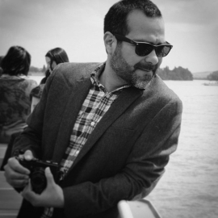

AUTORES
Gómez Cruz, Edgar

Información General
Es profesor titular de Medios (Culturas Digitales) en la Escuela de Artes y Medios de la UNSW en Sydney. Tiene una creciente reputación internacional como etnógrafo digital con un registro sustancial de artículos y monografías de autores únicos y coautores. Ha publicado en diez países diferentes, en cuatro idiomas diferentes. Estas publicaciones son el resultado directo de una larga historia de ingresos, liderazgo y administración exitosos. Supervisión de UG a PhD. Ha enseñado por más de 15 años.
Ha trabajado y / o estudiado en nueve universidades a través de diversas oportunidades financiadas (becas de visita, becas de investigación, becas de viaje) en Australia, Canadá, Colombia, México, España y el Reino Unido, y conferencias internacionales en una serie de disciplinas como Comunicación, Medios, Sociología, Antropología, Ciencias Sociales, Métodos y Estudios de Internet.
Bibliografía en Español
Videos (entrevistas, presentaciones, charlas)
**Conferencia “Cultura Digital: Una lectura desde las prácticas visuales materiales” **-UPLA 2017 (Español)
Etnografía en la era (post)digital: Desafíos y oportunidades -UAM